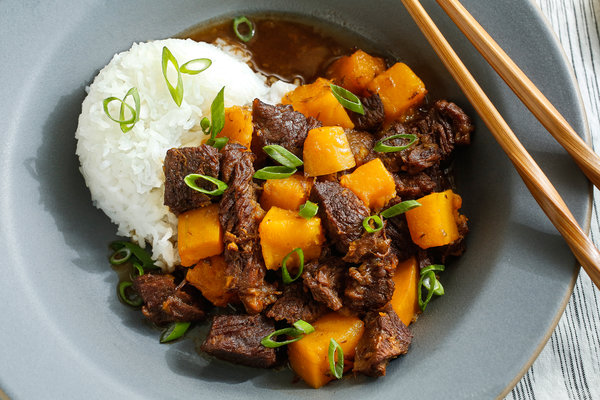

nikujaga | japanese beef and sweet potato stew

fk winter 2.0
ingredients
- 1 ½ to 2 pounds boneless beef chuck, cut into 1- to 1 ½-inch chunks
- 2 cups dashi, chicken stock, or water
- ¼ cup soy sauce
- ¼ cup mirin, honey, or sugar
- 10 nickel-sized slices peeled fresh ginger
- Salt and black pepper to taste
- 1 lemon or yuzu
- 1 ½ pounds peeled sweet potatoes, cut into 1-inch chunks
instructions
- In a large skillet, preferably nonstick, sear the meat over medium-high heat in two batches until nicely browned, only about 5 minutes per batch, since it’s sufficient to brown the meat well on one side. As you finish, transfer the chunks to a medium-sized flameproof casserole with a lid.
- When the meat is all browned, add the stock to the skillet and cook over high heat, stirring and scraping occasionally, until all the solids are integrated into the liquid. Pour into the casserole with the soy sauce, mirin, ginger, and a couple of grindings of pepper. Peel the lemon and add the peel to the mixture; juice the lemon and reserve the juice.
- Cover and cook on top of the stove (or in a 350°F oven), maintaining a steady simmer. Stir after 30 minutes and begin to check the meat at 15-minute intervals.
- 4. When the meat is tender, or nearly so, stir in the sweet potatoes and continue to cook as before, checking every 15 minutes, until the sweet potatoes are tender but not mushy. (If you choose to prepare the dish in advance, undercook the sweet potatoes slightly and stop cooking here. Let sit at room temperature for up to a couple of hours or cover and refrigerate for up to a day. If you like, skim excess fat before reheating and proceeding, adding a little water if necessary.) Taste and add salt if needed, then stir in the reserved lemon juice and serve.